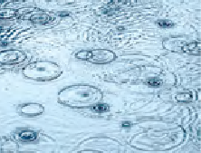
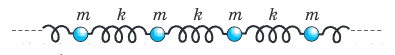
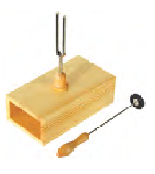
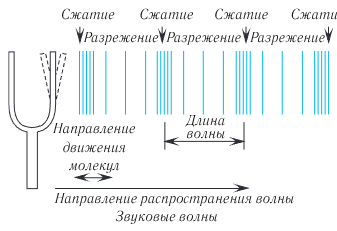
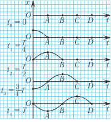
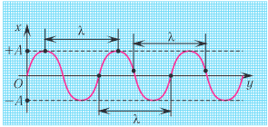
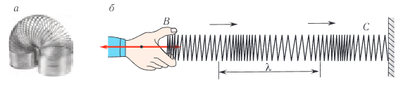
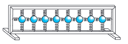
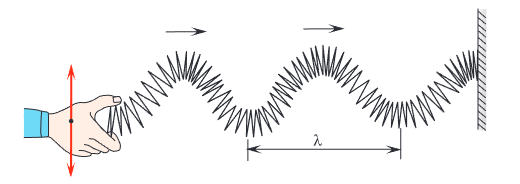
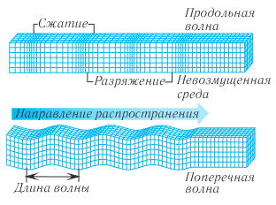

Видеоурок по теме
§ 5. Распространение колебаний в упругой среде. Продольные и поперечные волны
Если бросить камень в воду, то от места падения по поверхности воды начнут распространяться круговые волны (рис. 30), радиус которых будет увеличиваться с течением времени. Как происходит процесс распространения колебаний? Какие условия необходимы для этого?

Рассмотрим систему горизонтальных пружинных маятников, соединенных друг с другом (рис. 31). Что произойдет, если подействовать на один из шариков цепочки (например, первый) периодической внешней силой, направленной вдоль цепочки? Поскольку между шариками действуют силы упругости, обусловленные пружинами, то в колебательное движение той же частоты придут и все последующие шарики цепочки. Начинается процесс распространения колебаний, причем колебания каждого последующего шарика будут запаздывать по сравнению с колебаниями предыдущего. Это запаздывание обусловлено конечной скоростью распространения упругих деформаций вдоль цепочки пружин.

Рассмотренная система (цепочка шариков, связанных между собой пружинами) представляет собой простейшую (одномерную) модель упругой среды. Упругой называется среда, частицы которой связаны между собой силами упругости. Примерами упругих сред служат газ, жидкость, твердое тело, эластичный материал (резина).
Результаты экспериментов показывают, что колебания, возбужденные в какой-либо точке упругой среды, с течением времени передаются в ее другие точки. Так от камня, брошенного в спокойную воду озера, кругами расходятся волны. Из-за периодических сокращений сердца возникают биения пульса на запястье и т. п. Перечисленные явления — примеры процесса распространения механических колебаний в упругой среде.
Механической волной называется процесс распространения колебаний в упругой среде, который сопровождается передачей энергии от одной точки среды к другой.


Механические волны могут распространяться в газах, жидкостях, твердых телах, но не могут распространяться в вакууме.
Источником механических волн всегда является какое-либо колеблющееся тело. Механизм образования волны можно представить следующим образом. Источник колебаний, например камертон (рис. 32), воздействует на частицы упругой среды, соприкасающиеся с ним, и заставляет их совершать вынужденные колебания (рис. 33). Участки упругой среды вблизи источника деформируются, и в них возникают силы упругости, препятствующие деформации.
Если частицы среды сблизились, то возникающие упругие силы их расталкивают, а если они удалились друг от друга, то упругие силы их сближают. Силы будут действовать на все более удаленные от источника частицы среды, постепенно приводя их в колебательное движение. В результате колебания будут распространяться в среде в виде волны (рис. 34).
Если источник колеблется гармонически, то и волна в упругой среде будет гармонической. Заметим, что колебания, вызванные в каком-либо месте упругой среды, распространяются в ней не мгновенно, а с определенной скоростью, зависящей от плотности и упругих свойств среды.

Подчеркнем, что при распространении волны отсутствует перенос вещества, поскольку частицы среды колеблются вблизи своих фиксированных положений равновесия.
Рассмотрим основные характеристики волн (см. рис. 34):
амплитуда (A) — модуль максимального смещения точек среды от положений равновесия при колебаниях;
период (T) — время одного колебания (период колебаний точек среды равен периоду колебаний источника волны):
где t — промежуток времени, в течение которого совершаются N колебаний.
Частота (ν) — число колебаний, совершаемых данной системой в единицу времени:
частота волны равна частоте колебаний источника.
Отметим, что амплитуда, период и частота для механических волн определяются точно так же, как и для колебаний.
Новыми характеристиками волн являются (рис. 35):
длина волны (λ) — это расстояние, на которое возмущение распространяется за промежуток времени, равный периоду колебаний источника:
скорость распространения волны (v) — это скорость распространения колебаний в упругой среде, модуль этой скорости согласно (1) равен:
Подчеркнем, что скорость распространения волн и скорость колебания частиц — это разные величины.
Волновая поверхность — это поверхность, все точки которой колеблются в одинаковых фазах, т. е. это поверхность равных фаз. Геометрическое место точек, до которых доходят колебания к моменту времени t, называется волновым фронтом.
Волна называется круговой, если ее волновой фронт является окружностью (см. рис 30).

Распространение волны можно наблюдать, проведя следующий эксперимент: если один конец резинового шнура, лежащего на гладком горизонтальном столе, закрепить и, слегка натянув шнур рукой, привести его второй конец в колебательное движение в направлении, перпендикулярном шнуру, то по нему побежит волна.
В отличие от колебаний, где кинетическая и потенциальная энергии изменяются в противофазе (см. рис. 22), в бегущей волне колебания кинетической и потенциальной энергий происходят в одинаковой фазе.
Волна называется продольной, если колебания частиц среды происходят вдоль направления распространения волн. Распространение волн вдоль цепочки горизонтальных пружинных маятников (см. рис. 31) является примером распространения продольных упругих волн.
При этом распространение волны сопровождается образованием сгущений и разрежений вдоль направления ее распространения.
Продольную волну легко получить с помощью длинной «мягкой» пружины (рис. 36, а), которая лежит на гладкой горизонтальной поверхности и один конец ее закреплен. Упругие волны в газах и жидкостях возникают только при сжатии или разрежении среды. Поэтому в таких средах возможно распространение только продольных волн.

Легким ударом по свободному концу B пружины мы вызовем появление волны (рис. 36, б). При этом каждый виток пружины будет колебаться вдоль направления распространения волны BC. Примерами продольных волн являются звуковые волны в воздухе и жидкости.
Волна называется поперечной, если частицы среды колеблются в плоскости, перпендикулярной направлению распространения волны.

Поперечная волна будет распространяться вдоль цепочки пружинных маятников, если на один из них подействовать периодической силой, направленной перпендикулярно цепочке (рис. 37).
Используя длинную пружину, можно также продемонстрировать распространение поперечных волн, если совершать колебания незакрепленного конца перпендикулярно продольной оси пружины (рис. 38).

В твердых телах упругие волны могут возникать также и при смещении или сдвиге одних слоев среды относительно других. Поэтому в отличие от жидкостей и газов в твердых телах возможно распространение как продольных, так и поперечных волн.
Отметим, что скорость этих волн различна, так как для продольных волн их распространение связано с деформацией сжатия, а для поперечных — с деформацией сдвига (рис. 39). Упругие свойства тел в отношении этих видов деформации неодинаковы, и скорости распространения будут отличаться. Например, поперечные волны в стали распространяются со скоростью, модуль которой 3300 м/с, а продольные — 6100 м/с.

Нажмите на иконку или кнопку для прослушивания.